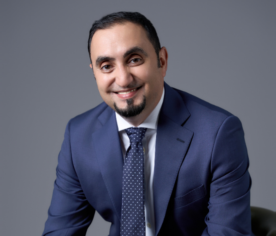

2025 · 1st edition
AbjadNLP 2025
The inaugural workshop established a dedicated international venue for NLP across Abjad, Perso-Arabic and Ajami writing traditions.
AbjadNLP brings together researchers, language communities and technology builders working on languages written in Arabic-derived scripts. The workshop exists because script matters: it shapes tokenisation, orthography, OCR, search, generation, language resources and the ability of communities to participate fully in the digital world.
Because language technology is not script-neutral. Orthographic variation, shaping and rendering, segmentation, transliteration, OCR, low-resource data and multilingual modelling all behave differently across writing traditions.
Arabic-derived scripts are used across Africa, the Middle East, Central Asia and South Asia by communities with very different linguistic histories. Some of these languages have mature digital resources; many others remain under-resourced, inconsistently encoded, poorly represented in training data or weakly supported by mainstream NLP systems.
That gap affects much more than benchmark scores. It affects whether people can search, translate, read, write, learn, access public information, build cultural archives and use modern AI systems in their own languages. It also affects whether linguistic heritage survives the transition from print and oral traditions into digital environments.
AbjadNLP provides a place to study these problems together while respecting the differences between Arabic, Perso-Arabic and Ajami traditions. It connects computational work with orthography, language resources, sociolinguistics and the practical needs of language communities.
Low-resource communities need corpora, lexicons, benchmarks, tools and models that reflect their actual writing practices.
Tokenisation, orthography, Unicode, glyph rendering, OCR, transliteration and spelling variation require dedicated attention.
Strong performance in high-resource languages does not guarantee reliable behaviour for dialects, minority languages or alternative orthographies.
Better digital infrastructure enables communities to search, analyse, teach and preserve linguistic and cultural material.
AbjadNLP deliberately spans languages that are typologically different but share Arabic-derived writing systems and many related computational challenges.
Modern Standard Arabic, Classical Arabic and regional dialects, including challenges in morphology, dialect variation, code-switching, generation and evaluation.
Persian, Urdu, Pashto, Sorani Kurdish, Sindhi, Uyghur, Azeri and other languages that use adapted Arabic-derived scripts.
African languages including Hausa, Fula, Wolofal, Swahili, Kanuri, Mandingo and Tamazight written using Arabic-derived conventions.
AbjadNLP is designed as an ongoing workshop series rather than a one-off event, connecting research papers, shared tasks, proceedings and community-building across editions.
Encourage reusable corpora, dictionaries, datasets, annotation schemes, orthographic documentation and open tools.
Advance NLP and LLM methods that work across scripts, dialects and low-resource settings rather than only dominant languages.
Develop better benchmarks and shared tasks that expose where multilingual systems succeed, fail or behave unevenly.
Connect researchers across regions and disciplines, including academia, industry and grassroots language communities.
Each edition builds a permanent research record through peer-reviewed proceedings while extending the workshop's coverage of Arabic-script languages and shared research challenges.
The inaugural workshop established a dedicated international venue for NLP across Abjad, Perso-Arabic and Ajami writing traditions.
The second edition expanded the community and introduced four shared tasks spanning generated-text detection, authorship, style transfer and medical NLP.
The third edition continues the workshop's multilingual and community-driven agenda, with an expanded shared-task programme and wider Abjad and Ajami coverage.
AbjadNLP proceedings are archived on the ACL Anthology, giving papers and shared-task work a permanent, openly accessible home and making it possible to follow the development of the field across editions.
The workshop welcomes work across the NLP pipeline, especially research that helps explain, document or overcome the technical consequences of writing-system and resource diversity.
Morphology, tokenisation, tagging, parsing, named entities, sentiment, language modelling and representation learning.
Multilingual and low-resource LLMs, adaptation, evaluation, safety, generated-text detection and culturally aware generation.
Translation, speech recognition, speech synthesis and cross-lingual technologies for under-represented languages.
Optical character recognition, handwriting, Unicode, fonts, glyph rendering, transliteration and orthographic variation.
Corpora, dictionaries, benchmarks, annotation, orthography descriptions and tools for low-resource communities.
Code-switching, dialects, language preservation, education, cultural heritage, fairness and digital inclusion.

Natural Language Processing researcher working on multilingual and under-resourced language technology, with a long-standing focus on Arabic NLP, language resources and cross-lingual research. AbjadNLP is organised as a continuing community workshop with collaborators and chairs changing across editions.